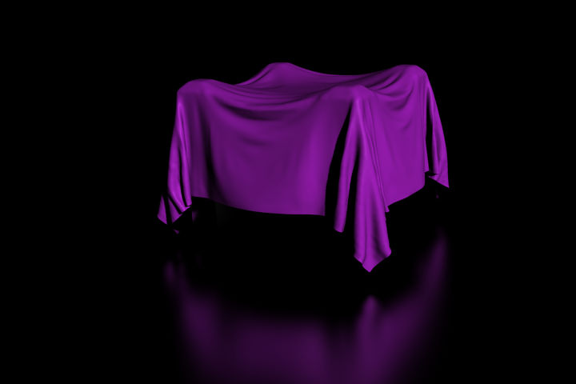

Вступ¶
Імітація тканини -- Cloth -- це один з найважчих аспектів у комп'ютерній графіці, оскільки це оманливо проста річ з реального світу, яка вважається сама собою зрозумілою, однак насправді має дуже складні внутрішні та середовищні взаємодії. Після багатьох років розробки, Blender має дуже надійний імітатор тканини, що використовується для створення імітації одягу, прапорів, банерів тощо. Тканина взаємодіє іншими рухомими об'єктами, та неї впливають вони, вітер та інші сили, а також загальна аеродинамічна модель, і цим всім ви можете керувати.

Cloth example. |

Тканина на різьблених дерев'яних чоловічках (зроблено митцем motorsep). |

Cloth example. |
{kind=link}
Шматок тканини -- це будь-яка сіть, відкрита або закрита, що може бути визначена як тканина. Панелі імітатора «Тканина» -- Cloth розміщуються після його активації у вкладці «Фізика» -- Physics Редактора Властивостей. Тканина є відкритою чи закритою сіттю та не має маси, тому що імітатор припускає, що уся вона має однакову щільність або масу на квадратну одиницю.
Cloth is commonly modeled as a mesh grid primitive, or a cube, but can also be, for example, a teddy bear. However, Blender's soft body system provides better simulation of closed meshes; Cloth is a specialized simulation of fabrics.
Після призначення властивості «Тканина» (активації тканинного імітатора) для об'єкта однойменний модифікатор -- modifier Cloth автоматично додається у стек модифікаторів для цього об'єкта. Як модифікатор -- modifier, він може взаємодіяти з іншими модифікаторами, такими як «Арматура» -- Armature та «Згладження» -- Smooth. У таких випадках, остаточна форма сіті обчислюється у відповідності до порядку стеку модифікаторів. Наприклад, ви повинні згладжувати тканини після того, як тканинний модифікатор обчислить її форму.
Тому, ви редагуєте устави Тканини у двох місцях: у вкладці «Фізика» -- Physics -- правите власне тканинні властивості та у вкладці «Модифікатори» -- Modifiers правите властивості щодо показу та взаємодії тканини з іншими модифікаторами.
Ви можете Застовувати -- Apply модифікатор Cloth для зафіксування або закарбування форми сіті у певному кадрі імітації, і це вилучає цей модифікатор зі стеку. Наприклад, ви можете накрити тканинною площиною стіл, запустити імітацію та у потрібному місці застосувати модифікатор тканини. У такому вигляді ви можете використовувати тканинний імітатор для моделювання з метою заощадження часу для нього.
Результати імітації зберігаються у кеші, а тому форма сіті, вже один раз обчислена у певному кадрі анімації, не потребує повторних обчислень до моменту її зміни. Якщо зроблені зміни імітації, то ви можете повністю очистити кеш та повторно запустити імітацію. Запуск імітації на перший раз є повністю автоматичним та не потребує запікання або окремих кроків, що переривають робхід.
Обчислення форми тканини у кожному кадрі є автоматичним та робиться у фоновому режимі, а тому ви можете продовжувати працювати над сценою під час обчислення імітації. Однак, це інтенсифікує роботу Центрального Процесора та залежно від потужності вашого ПК і складності самої імітації, може потребуватися значний час для обчислення змін сіті, а також можуть з'явитися помітні вами запізнювання в інтерфейсі.
Ghi chú
Не забігайте вперед
Якщо ви уклали імітацію тканини, але Blender ще не обчислив її форми у ході імітації, та, якщо ви перейдете вперед на багато кадрів по вашій анімації, то імітатор тканини може не бути у змозі обчислити або показати вам точну форму сіті у такому кадрі, якщо ще не обчислено її форму у попередніх кадрі(ах).
Робхід¶
Загальний процес для роботи з тканиною є наступним:
- Змоделюйте звичайним чином тканинний об'єкт у загальній стартовій формі.
- Визначте цей об'єкт як «тканина» у вкладці «Фізика» -- Physics Редактора Властивостей -- Properties Editor.
- Model other deflection objects that will interact with the cloth. Ensure the Deflection modifier is last on the modifier stack, after any other mesh deforming modifiers.
- Light the cloth and assign materials and textures, UV unwrapping if desired.
- За бажанням додайте для цього об'єкта систему частинок, що наприклад, імітує випаровування пари з тканинної поверхні.
- Запустіть відтворення імітації та скоригуйте тканинні властивості для отримання потрібних результатів. Контролери відтворення у редакторах, що мають шкалу часу, чудово підходять цього кроку.
- За бажанням зафіксуйте (застосуйте модифікатор) у певному моменті імітації для отримання нової стандартної стартової форми.
- Зробіть дрібні правки для сіті кадр-за-кадром з метою корекції незначних огріхів.
Mẹo
Для уникання нестабільної імітації переконайтеся, що тканинний об'єкт не проникає та не перетинається з іншими відхильними об'єктами.